① 先看核心画面
先问：两个事物之间是什么关系？
② 再看最小句子
先说完整主干，再补充信息。
③ 最后记 Chunk
把高频搭配当完整语块学习。
重要边界：核心画面是记忆锚点，不是万能公式；惯用搭配必须回到真实语块。
ENGLISH OS 3.0 · TEACHING COURSEWARE
不依赖逐词翻译，用稳定的认知画面组织英语。
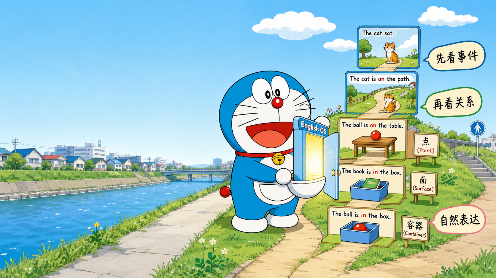
START HERE
先问：两个事物之间是什么关系？
先说完整主干，再补充信息。
把高频搭配当完整语块学习。
START HERE
English OS 八大规则：解决句子如何搭建、信息如何组织。
介词总地图、十个核心介词、其他高频介词分类。
易混组合、Chunk、练习、答案和每日训练。
本课件逐项映射原 DOCX 的段落、表格、例句、辨析、练习和附录，不以压缩内容换取视觉简洁。
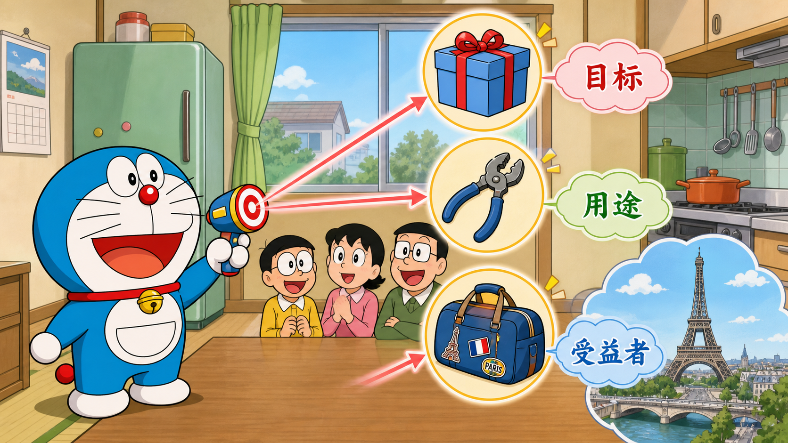
START HERE
之后遇到介词，再把词与词放回同一幅空间或关系图中。
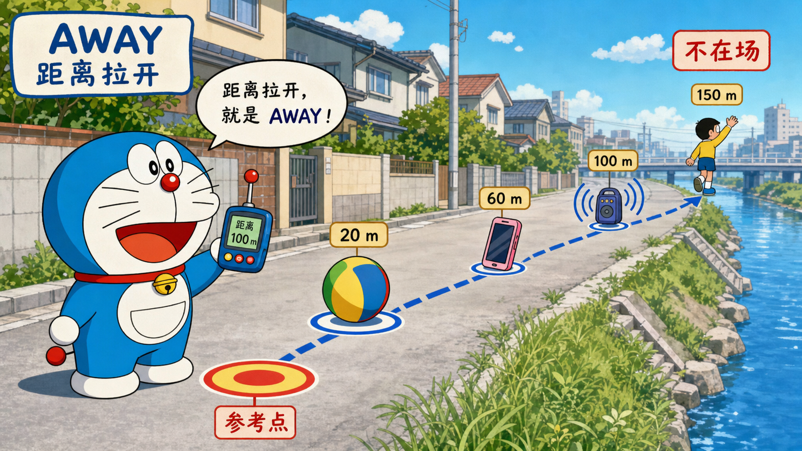
使用说明
English OS 3.0
八大规则与英语介词底层逻辑
详细完整版学习手册
| 先看画面 → 找核心关系 → 搭建骨架 → 添加信息 → 形成英语表达 |
核心目标：不依赖逐词翻译，用稳定的认知画面组织英语。
个人学习版 · 2026
ENGLISH OS 3.0 · TEACHING COURSEWARE
这一部分保留原文全部知识点，并按“画面 → 关系 → 表达 → 练习”重新编排。
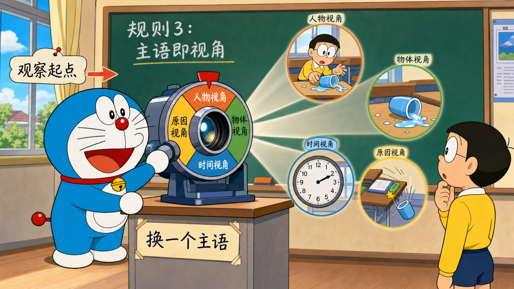
使用说明
这份手册把两套内容合并成一个系统：第一部分是“English OS 八大规则”，解决句子如何搭建、信息如何组织；第二部分是“介词认知系统”，解决词与词之间的空间、方向、来源、目标和关系。
| ! 非常重要：核心画面是“记忆锚点”，不是万能公式 英语介词通常形成“放射状意义网络”：一个最典型的空间画面，会延伸出时间、状态、原因、工具、逻辑等用法。 核心画面能帮助理解大多数用法，但有些搭配已经习惯化，仍需通过语块输入来巩固。不要把任何一个关键词机械套到所有句子里。 |
使用说明
1. 先看每个词的“核心画面”和“十秒判断问题”。
2. 读例句时，不先翻译；先在脑中播放空间关系或事件关系。
3. 用自己的话解释：为什么这里是这个介词，而不是另一个？
4. 把高频搭配按完整 Chunk 记录，例如 be proud of、listen to、by Friday，而不是只记单个介词。
5. 每周用附录中的辨析题复习，并把错误加入 Listening / Speaking Error Bank。
ENGLISH OS 3.0 · TEACHING COURSEWARE
这一部分保留原文全部知识点，并按“画面 → 关系 → 表达 → 练习”重新编排。
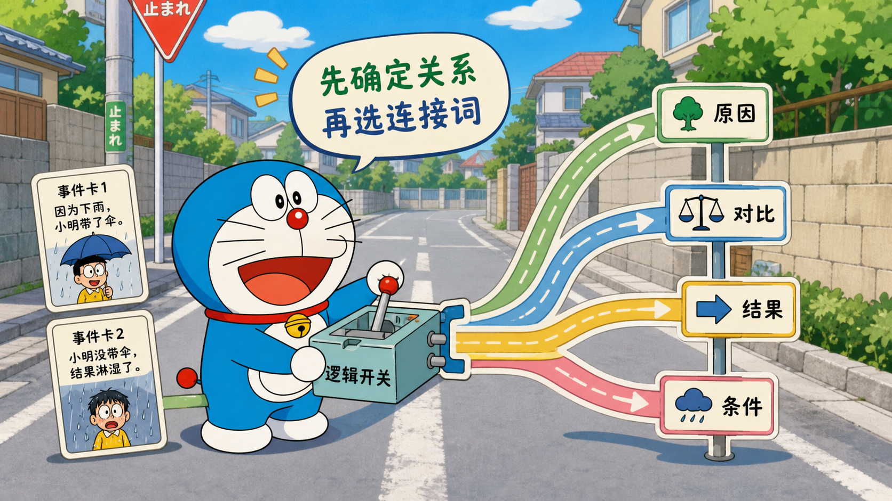
目录
第一部分 English OS 八大规则
第二部分 英语介词总地图：位置、运动、来源、目标、关系、边界与时间
第三部分 核心介词详解：of / for / to / off / away / with / by / at / on / in
第四部分 其他高频介词分类详解
第五部分 高频易混组合与固定语块
第六部分 练习与参考答案
目录
附录 一页速查表与每日训练模板
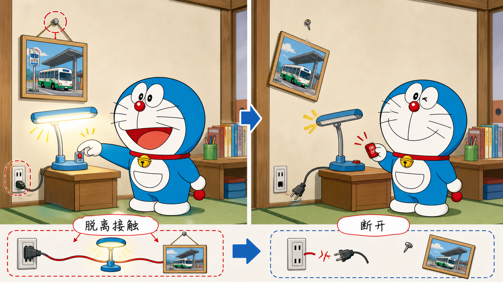
ENGLISH OS 3.0 · TEACHING COURSEWARE
这一部分保留原文全部知识点，并按“画面 → 关系 → 表达 → 练习”重新编排。
第一部分 English OS 八大规则
English OS 的核心不是“把中文逐字换成英文”，而是先确定事件，再选择视角，最后按英语的信息顺序搭建表达。以下八条规则可以同时用于口语、写作、听力分析和中译英。
| 事件 → 骨架 → 主语视角 → 逻辑连接 → 信息扩展 → 完整表达 |
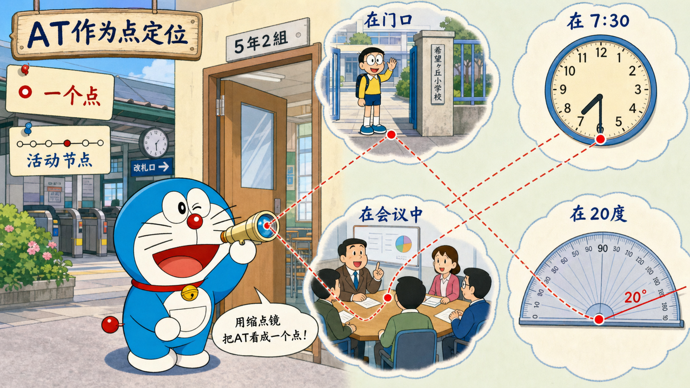
第一部分 English OS 八大规则
英语句子首先要让听者知道“发生了什么”。
| ◆ 核心公式 核心事件 = 谁 / 什么 + 做了什么 / 处于什么状态 最小模型：S + V；需要时再加 O / C。 |
第一部分 English OS 八大规则
中文常允许先铺背景、原因和态度，最后才说核心动作；英语通常更希望先建立事件框架。抓不住核心事件，就容易出现句子很长、谓语不清、从句套错等问题。
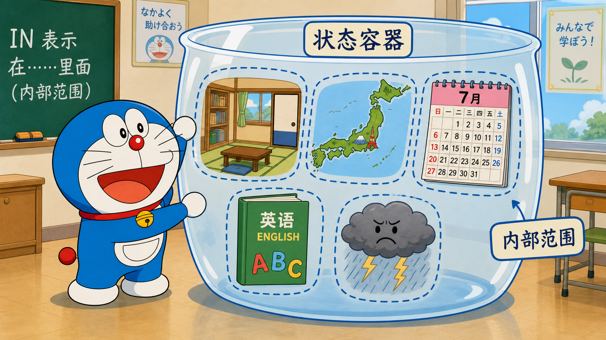
第一部分 English OS 八大规则
1. 把中文意思压缩成一个最小事件。
2. 圈出真正发生变化的动作或状态。
3. 先说一个完整的简单句，再决定哪些信息值得补充。
第一部分 English OS 八大规则
| 原始想法 / 句子 | English OS 处理方式 |
|---|---|
| 因为最近工作很忙，所以我一直没有时间练英语。 | 核心事件：I haven’t had time. 扩展：I haven’t had time to practise English because work has been busy lately. |
| 这次旅行最让我惊讶的是天气变化得非常快。 | 核心事件：The weather changed quickly. 重构：What surprised me most about the trip was how quickly the weather changed. |
| 关于这个问题，我觉得我们需要再讨论一下。 | 核心事件：We need to discuss it more. 表达：I think we need to discuss this issue further. |
第一部分 English OS 八大规则
一上来就翻译“因为、关于、对于、在……方面”，结果主句迟迟不出现。
把多个中文动词都当成英文谓语，造成 run-on sentence。
只找名词，不找真正承载时态的谓语。
| 练 本规则训练 拿一个中文长句，强迫自己先只写 5—8 个英文词，形成最小核心句。确认句子能独立成立后，再逐层扩展。 |
第一部分 English OS 八大规则
英语不是一次性“翻出整句”，而是先搭承重结构。
| ◆ 核心公式 骨架优先：S + V (+ O / C) 扩展顺序可参考：时间 → 地点 → 方式 → 原因 → 结果 / 评价。 |
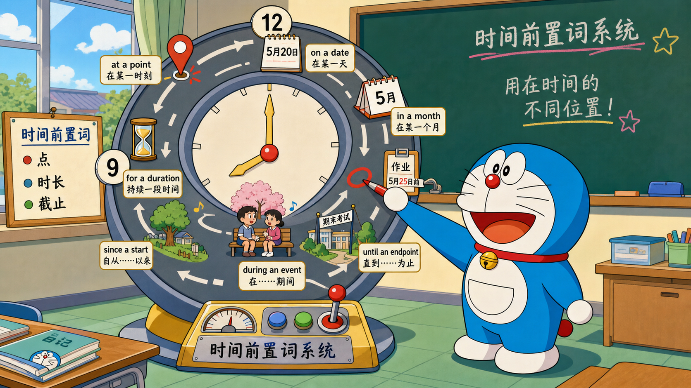
第一部分 English OS 八大规则
骨架像房子的梁柱。时间、地点、原因、定语和插入语都是装修。装修再漂亮，没有主谓骨架，句子也站不住。
第一部分 English OS 八大规则
1. 写出主语。
2. 选一个真正能承载时态的谓语。
3. 判断是否需要宾语或补语。
4. 把其他内容当作“信息积木”接到骨架上。
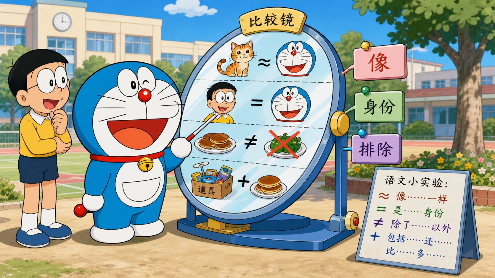
第一部分 English OS 八大规则
| 原始想法 / 句子 | English OS 处理方式 |
|---|---|
| 我昨天在医院和一位医生讨论了这个方案。 | 骨架：I discussed the plan. 扩展：I discussed the plan with a doctor at the hospital yesterday. |
| 人工智能正在快速改变医疗行业。 | 骨架：AI is changing healthcare. 扩展：AI is rapidly changing the healthcare industry. |
| 我们最后决定下个月再开始。 | 骨架：We decided to start. 扩展：In the end, we decided to start next month instead. |
第一部分 English OS 八大规则
为了保留中文顺序，把时间、地点、原因全塞在句首。
没有判断动词是及物、不及物还是系动词。
把 be 动词和实义动词重复使用，例如 *I am agree。
| 练 本规则训练 每天选 5 句材料，只写它们的骨架。例如：The system failed. / We changed the plan. / The result was surprising。然后再恢复完整信息。 |
第一部分 English OS 八大规则
主语不是“人”的专属位置，而是句子的观察起点。
| ◆ 核心公式 主语 = 本句要从哪里开始看事件。 可以是人、物、时间、地点、动作、概念、原因，也可以使用形式主语 it / there。 |
第一部分 English OS 八大规则
中文常省略主语，或习惯从“我 / 我们”出发。英语会根据表达重点，把真正造成变化、承载信息或最容易理解的实体放到主语位置。
第一部分 English OS 八大规则
1. 问：这句话最想让听者先看到什么？
2. 尝试把“原因、时间、事物、动作”放到主语位置。
3. 比较主动、被动、there be 和 it 结构，选择信息最自然的一种。
第一部分 English OS 八大规则
| 原始想法 / 句子 | English OS 处理方式 |
|---|---|
| 大雨导致比赛取消。 | The heavy rain caused the game to be cancelled. 原因作主语。 |
| 这个决定让我很惊讶。 | The decision surprised me. 事物作主语，比 I was surprised by... 更直接。 |
| 学英语需要耐心。 | Learning English takes patience. 动作作主语。 |
| 这个地区有很多小医院。 | There are many small hospitals in this area. there 引入新信息。 |
| 很难用一句话解释。 | It is difficult to explain in one sentence. it 承接后面的真正内容。 |
第一部分 English OS 八大规则
把每句都写成 I think / I feel / We can。
误以为无生命主语“不符合逻辑”。
主语太长，导致听者很久等不到谓语。
| 练 本规则训练 把 5 个以“我觉得……”开头的句子改写，至少两句不用 I 作主语。 |
第一部分 English OS 八大规则
连接词不是装饰，它告诉听者下一块信息与上一块是什么关系。
| ◆ 核心公式 常见逻辑：并列 / 递进 / 转折 / 原因 / 结果 / 条件 / 时间 / 举例 / 让步 / 总结。 |
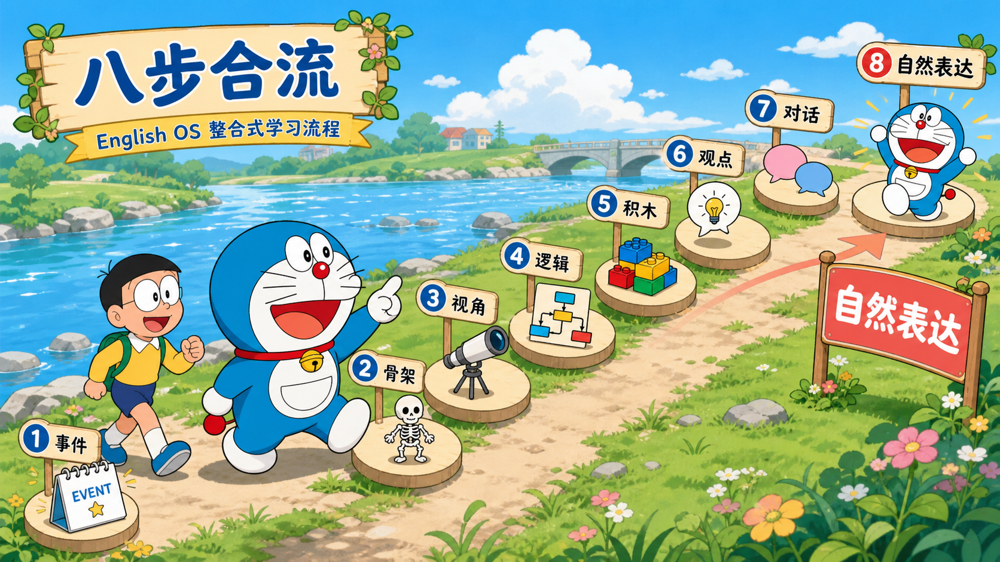
第一部分 English OS 八大规则
同样的两件事实，用不同连接词会形成完全不同的意思。英语表达的清晰度很大程度来自“关系标记得是否准确”。
第一部分 English OS 八大规则
1. 先把两个事实分别写成短句。
2. 问：第二句是在解释、反驳、补充，还是给结果？
3. 选择最简单准确的连接词。
4. 必要时用标点或分句，而不是无限使用 and。
第一部分 English OS 八大规则
| 原始想法 / 句子 | English OS 处理方式 |
|---|---|
| 系统很强大。它仍然会犯错。 | 转折：The system is powerful, but it still makes mistakes. |
| 我没去。下雨了。 | 原因：I didn’t go because it was raining. 结果：It was raining, so I didn’t go. |
| 这个方法便宜。它也更容易实施。 | 递进：This method is cheaper. It is also easier to implement. |
| 即使很忙，我也会练习。 | 让步：Even though I’m busy, I still make time to practise. |
第一部分 English OS 八大规则
because 和 so 同时连接同一因果关系。
although 与 but 同时出现。
所有信息都用 and，导致逻辑含糊。
为了“高级”滥用 nevertheless、notwithstanding 等词。
| 练 本规则训练 听一段材料，把每个连接词写在纸上，并标注它表达的逻辑：原因、结果、对比、举例还是总结。 |
第一部分 English OS 八大规则
一句话不必一次完成；可以像搭积木一样逐层增加信息。
| ◆ 核心公式 核心句 → 时间 / 地点 → 方式 → 原因 → 细节 / 例子 → 结果 / 评价。 |
第一部分 English OS 八大规则
真实口语不是先在脑中生成一个完美长句再输出。更自然的方法是先给出稳定主干，然后用短信息块继续扩展。
第一部分 English OS 八大规则
1. 先说最短完整句。
2. 每次只添加一个信息块。
3. 信息太多时，主动断句。
4. 用 which、because、when 等连接必要的从句，但不要让结构失控。
第一部分 English OS 八大规则
| 原始想法 / 句子 | English OS 处理方式 |
|---|---|
| I went hiking. | I went hiking last weekend. → I went hiking with a friend last weekend. → We went to a trail near the city because we wanted some fresh air. |
| The model failed. | The model failed during testing. → It failed during testing because the input format had changed. → As a result, we had to delay the release. |
| The trip was memorable. | The trip was memorable. The scenery was beautiful, and we saw several wild animals. It was a little scary at times, but I enjoyed it. |
第一部分 English OS 八大规则
把所有修饰信息塞进一个超长句。
从句层级过多，自己说到一半忘了主句。
每个细节都同样重要，没有信息轻重。
| 练 本规则训练 用同一个核心句做三轮扩展：第一轮加时间地点，第二轮加原因，第三轮加结果或感受。 |
第一部分 English OS 八大规则
先给事实，再给观点，最后给理由；需要时加入例子、对比和结论。
| ◆ 核心公式 基础版：Fact → Opinion / Feeling → Reason 完整版：Fact → Opinion → Reason → Example → Contrast → Conclusion。 |
第一部分 English OS 八大规则
很多人“没话说”不是词汇不够，而是没有内容顺序。框架把表达任务拆成几个可以重复使用的槽位。
第一部分 English OS 八大规则
1. 先说客观事实。
2. 说明你的感受或判断。
3. 解释为什么。
4. 用一个具体例子让内容落地。
5. 加入让步或对比，避免观点太绝对。
第一部分 English OS 八大规则
6. 用一句结论或展望收尾。
第一部分 English OS 八大规则
| 原始想法 / 句子 | English OS 处理方式 |
|---|---|
| 谈一次旅行 | Fact: I visited Yellowstone last summer. Opinion: It was an amazing experience. Reason: The scenery was beautiful. Example: We even saw bears and foxes. Contrast: It was a little scary at times. Conclusion: I’d love to go back someday. |
| 谈 AI 工程 | Fact: Many AI models work well in demos. Opinion: Production deployment is much harder. Reason: Real systems must be reliable, scalable, and safe. Example: A small input change may break the pipeline. Conclusion: Engineering is as important as model quality. |
第一部分 English OS 八大规则
直接给观点，没有事实背景。
只说 because 后的抽象理由，没有例子。
为了完整机械说满六步，导致口语像模板。
| 练 本规则训练 选择一个日常话题，先用前三步说 30 秒；熟练后再加 Example 和 Contrast。 |
第一部分 English OS 八大规则
对话不是独白；它要推动共同决定。
| ◆ 核心公式 计划型对话：Idea → Options / Choice → Problem → Details → Agreement 解决问题型：Problem → Suggestion → Reason → Alternative → Decision。 |
第一部分 English OS 八大规则
真实交流中，正确语法只是底线。更重要的是让对方知道你提出什么、担心什么、可选方案是什么，以及最后决定了什么。
第一部分 English OS 八大规则
1. 提出想法或问题。
2. 给出一到两个选项。
3. 说明限制条件。
4. 补充时间、地点、费用等细节。
5. 确认最终决定和下一步。
第一部分 English OS 八大规则
| 原始想法 / 句子 | English OS 处理方式 |
|---|---|
| 安排周末出行 | How about going hiking on Saturday? → We could go in the morning or after lunch. → The only problem is the weather. → If it rains, we can visit the museum instead. → Great, let’s check the forecast on Friday. |
| 项目延迟 | We may need to delay the release. → The main issue is the test failure. → We can either fix it now or remove the feature. → Removing it is safer. → Let’s ship without it and add it next week. |
第一部分 English OS 八大规则
只表达自己的方案，不回应对方的信息。
问题提出很多，却没有替代方案。
对话结束时没有确认具体行动。
| 练 本规则训练 用五句话模拟一次“约时间”对话，最后一句必须包含确认：So we’ll meet at… / Let’s… |
第一部分 English OS 八大规则
清晰、准确、自然，比“看起来复杂”更高级。
| ◆ 核心公式 高级表达 = 清楚的主干 + 准确的逻辑 + 合适的 Chunk + 具体细节 + 自然节奏。 |
第一部分 English OS 八大规则
母语者常用的词并不一定难，但信息结构非常清楚。刻意替换成生僻词，往往让句子不自然，还会掩盖逻辑问题。
第一部分 English OS 八大规则
1. 优先使用准确动词，而不是一串抽象名词。
2. 一句只承担一个主要任务。
3. 用具体例子替代空泛形容词。
4. 积累完整语块，而不是孤立“大词”。
5. 写完后删掉不必要的词。
第一部分 English OS 八大规则
| 原始想法 / 句子 | English OS 处理方式 |
|---|---|
| We conducted an implementation of the plan. | 更自然：We implemented the plan. |
| The system is very very good. | 更具体：The system is reliable and easy to maintain. |
| Due to the fact that... | 多数场景直接用 because。 |
| I have a strong desire to... | 口语通常直接说 I really want to... |
第一部分 English OS 八大规则
把复杂词汇等同于高水平。
名词化过多，句子没有动作感。
为了避免重复而强行换同义词，破坏一致性。
| 练 本规则训练 改写一段自己的英文：不增加任何高级词，只通过分句、连接和具体例子，让它更清楚。 |
第一部分 English OS 八大规则
| ①找事件 → ②搭骨架 → ③选主语视角 → ④标逻辑 → ⑤积木扩展 → ⑥组织观点 → ⑦推动对话 → ⑧压缩并自然化 |
| 中译英检查清单 1. 我能用一个短句说出核心事件吗？ 2. 谁/什么最适合当主语？ 3. 哪个动词承载时态？ 4. 信息之间是什么逻辑？ 5. 是否应该拆成两句？ 6. 有没有可以直接使用的高频 Chunk？ 7. 句子是否具体、清楚、自然？ |
ENGLISH OS 3.0 · TEACHING COURSEWARE
这一部分保留原文全部知识点，并按“画面 → 关系 → 表达 → 练习”重新编排。
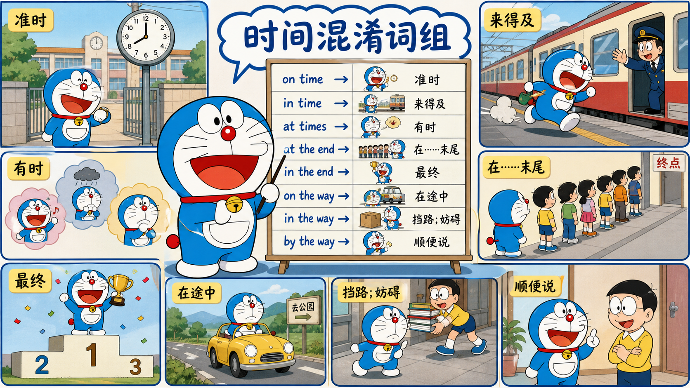
第二部分 英语介词总地图
介词的任务是把两个事物放进同一幅关系图中。它们可以描述位置、路径、来源、目标、伴随、分离、边界、时间和抽象逻辑。学习时应先问“它们之间是什么关系”，而不是先找一个中文翻译。
| 位置：at / on / in 路径：to / into / through / across 来源：from / of 关系：with / by 分离：off / away |
| 类别 | 核心成员与画面 |
|---|---|
| 定位系统 | at 点；on 表面/依附；in 容器/范围 |
| 方向与终点 | to 终点；toward(s) 朝向；for 目标/用途 |
| 路径 | into 进入；onto 到表面；through 穿过内部；across 横跨；along 沿线；past 越过 |
| 来源与分离 | from 起点；of 关系锚点；out of 从内部出来；off 脱离接触；away 拉开距离 |
| 伴随、工具与施事者 | with 伴随/所带工具；by 手段/施事者/临近；via 经由 |
| 相对位置 | over/above；under/below；between/among；behind/in front of；beside/near |
| 边界 | inside/outside；within/beyond；against |
| 时间 | at/on/in；since/for；by/until；during；before/after |
| 抽象逻辑 | about/regarding；because of/due to；despite；like/as；except/besides |
| 点、面、容器不是客观尺寸，而是说话者的“观察方式” 同一个地点可以被看成地图上的点、一个活动场所、一个建筑内部或一个制度环境。 因此：at school 强调地点/活动点；in the school 强调建筑内部；in school 在美式英语中常表示“在接受学校教育”。 |
ENGLISH OS 3.0 · TEACHING COURSEWARE
这一部分保留原文全部知识点，并按“画面 → 关系 → 表达 → 练习”重新编排。
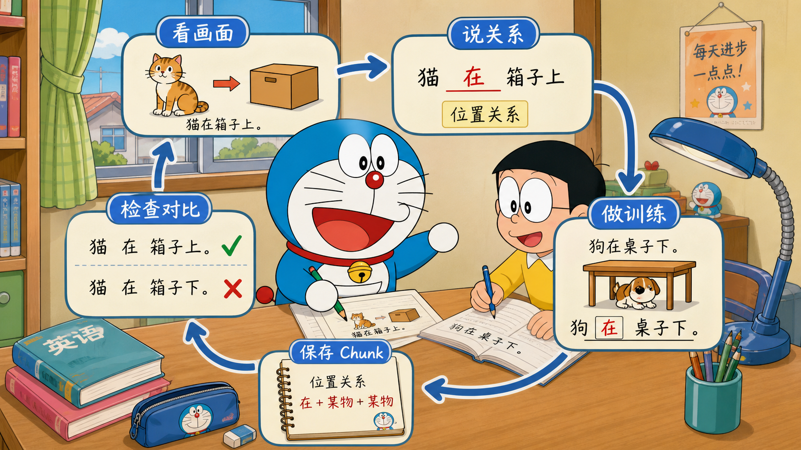
第三部分 十个核心介词详解
| 问 十秒判断问题 后面的名词，是不是在说明“前面的东西属于哪个整体、来自哪个范围，或以什么为参照”？ |
| 前项 ← 关系 / 归属 / 内容 ← of 后的参照整体 |
把 of 只理解为“……的”太空泛，把它只理解为“来源”又太窄。更稳妥的核心是：of 后面的名词提供一个关系锚点，帮助我们识别前面的部分、属性、内容、数量、原因或身份。
第三部分 十个核心介词详解
| English | 思维画面 / 中文解释 |
|---|---|
| a piece of cake | piece 从 cake 这个整体中被识别出来。 |
| one of my friends | one 从 friends 这个集合中选出。 |
| the color of the sky | color 以 sky 为所属/参照对象。 |
| a cup of coffee | cup 所承载的内容是 coffee。 |
| the city of Beijing | Beijing 说明 city 的具体身份，属于同位关系。 |
| proud of you | you 是引发 pride 的对象/原因之一。 |
第三部分 十个核心介词详解
部分—整体：a slice of bread, the top of the mountain。前项是整体中的部分或位置。
属性—拥有者：the name of the company, the sound of rain。属性或现象依附于后面的参照对象。
内容—容器/形式：a bottle of water, a photo of my family。注意 photo of X 通常表示照片内容是 X。
数量—集合：three of us, most of the work。前项从后面的限定集合中取出数量。
原因/情绪对象：afraid of dogs, tired of waiting。情绪或状态指向后面的对象。
第三部分 十个核心介词详解
| of 与 from of 建立内部、所属、内容或参照关系；from 更突出清晰的起点或来源路径。 This table is made of wood：仍能看出材料是木头。 Paper is made from wood：加工后原材料形态发生明显变化。 |
| a photo of Tom 与 a photo from Tom a photo of Tom：照片里是 Tom。 a photo from Tom：照片由 Tom 发来，照片内容不一定是 Tom。 |
第三部分 十个核心介词详解
of 的许多搭配已经词汇化，核心画面用来理解，不要强行逐字套用。
“动词 + of”要按完整语块学习，如 think of、consist of、approve of。
第三部分 十个核心介词详解
| 问 十秒判断问题 这个人或事物，是不是动作、物品、计划所面向的目标、用途或受益者？ |
| 当前事物 / 动作 ─────► 目标、用途、受益者 |
for 把注意力放在“面向谁、为了什么、适合什么”。它通常不强调实际到达，而强调意图、用途、对象或交换关系。
第三部分 十个核心介词详解
| English | 思维画面 / 中文解释 |
|---|---|
| This gift is for you. | 礼物的预定接受者是 you。 |
| I’m studying for the exam. | 学习所面向的目标是 exam。 |
| medicine for headaches | 药物的用途/适用问题是 headaches。 |
| a room for two people | 房间为两个人设计或准备。 |
| I paid $20 for the book. | 钱与书形成交换关系。 |
| We stayed there for three days. | 动作持续覆盖 three days 这一时间长度。 |
第三部分 十个核心介词详解
受益者：I cooked dinner for my family。家人是受益者。
目的与准备：leave for Paris, be ready for the test。行为或状态面向目标。
用途与适配：a tool for cutting glass。说明功能。
交换与代替：buy it for $10, speak for the team。表示交换价值或代表。
持续时间：for two hours。把事件与一个完整时长连接；这是高度常规化的时间用法。
第三部分 十个核心介词详解
原因对象：Thank you for your help。感谢所针对的原因/事项。
第三部分 十个核心介词详解
| for 与 to：buy / give I bought a book for Tom：Tom 是受益者，书未必已到他手里。 I gave the book to Tom：书发生转移，终点是 Tom。 |
| look for 与 look at look for：寻找，目标尚未找到。 look at：目光已经落到目标点。 |
| listen for 与 listen to listen for：留心等待某个声音出现。 listen to：注意力已连接到正在听的声音。 |
第三部分 十个核心介词详解
for 不等于所有中文“为了”；目的从句常用 to do：I went out to buy milk。
for + 时间段与 since + 起点必须区分。
第三部分 十个核心介词详解
| 问 十秒判断问题 是否存在方向明确的移动、传递或关系连接，并把后项看作终点？ |
| 起点 ═════════════► 终点 / 接收者 / 连接点 |
to 的核心是“朝终点并建立终点关系”。这个移动可以是物理移动，也可以是信息、注意力、所有权、变化或抽象关系。
第三部分 十个核心介词详解
| English | 思维画面 / 中文解释 |
|---|---|
| go to school | 移动终点是 school。 |
| give the file to Anna | 文件传递的接收终点是 Anna。 |
| listen to music | 注意力连接到 music。 |
| the key to success | key 与 success 构成开启/通向关系。 |
| change from A to B | 变化过程的终点状态是 B。 |
| be married to someone | 法律/社会关系连接到某人。 |
第三部分 十个核心介词详解
物理终点：walk to the station。
接收者：send an email to me。
反应与态度对象：be kind to children, respond to the question。
比例与对应：ten to one, an answer to the problem。
变化终点：turn to ice, rise to 30 degrees。
第三部分 十个核心介词详解
| to 与 toward(s) to 通常以终点为结构的一部分；toward(s) 只强调方向，未必到达。 She walked to me：走到我这里。 She walked toward me：朝我走来。 |
| 介词 to 与不定式 to 介词 to 后接名词或 -ing：look forward to meeting you。 不定式标记 to 后接动词原形：want to meet you。两者在现代语法中功能不同。 |
第三部分 十个核心介词详解
arrive 不能直接接 to：arrive at the station / arrive in Beijing；但 reach the station 不要介词。
home、here、there 作为方向副词时常不用 to：go home, come here。
第三部分 十个核心介词详解
| 问 十秒判断问题 原来是否贴着、连着、依附着或处于开启状态，现在发生了脱离或断开？ |
| 接触 / 连接：A—B → 脱离：A B |
off 聚焦“从接触、依附、线路或工作状态中脱开”的瞬间。它既可作介词，也常作副词和小品词。
第三部分 十个核心介词详解
| English | 思维画面 / 中文解释 |
|---|---|
| The picture fell off the wall. | 画原来接触墙面，后来脱离。 |
| Take off your shoes. | 鞋从脚上脱离。 |
| Turn off the light. | 让电路/工作状态断开。 |
| Cut off the power. | 切断供应连接。 |
| The plane took off. | 飞机离开地面。 |
| I’m off work today. | 从工作状态中暂时脱离。 |
第三部分 十个核心介词详解
表面脱离：fall off, get off the bus。
连接中断：switch off, cut off。
取消/停止：The meeting is off。原定安排不再继续。
偏离：off topic, off the road。离开正常路线或主题。
数量减少：20% off。价格从原水平减去一部分。
第三部分 十个核心介词详解
| off 与 out of off 强调从表面/接触/状态脱离；out of 强调从容器、内部或范围出来。 Get off the bus；Get out of the car。大型公共交通常被概念化为可走动的平台/服务，car 更像小容器。 |
| off 与 away off 关注“断开接触”；away 关注“距离拉大”。一个动作可以先 off，再 away。 |
第三部分 十个核心介词详解
| 问 十秒判断问题 相对于某个参考点，距离是否在增大，或对象是否不在参考地点？ |
| 参考点 ● ─────────────► 对象越来越远 |
away 不是普通“离开”的同义词。它把场景组织成“参考点 + 距离”。运动可以真实发生，也可以表示不在场、消失或持续做某事。
第三部分 十个核心介词详解
| English | 思维画面 / 中文解释 |
|---|---|
| Go away. | 从当前参考点离远。 |
| The dog ran away. | 狗迅速拉开与原地点/主人的距离。 |
| She is away this week. | 她不在通常的参考地点。 |
| Put the phone away. | 把手机移到日常使用区之外并收好。 |
| The sound faded away. | 声音逐渐远去/消失。 |
| He worked away all morning. | away 强调动作持续不断地进行。 |
第三部分 十个核心介词详解
物理距离：move away from the fire。
不在场：be away on business。
移除/丢弃：throw away, give away。
逐渐消失：fade away, melt away。
持续动作：type away, chat away。表示一直做。
第三部分 十个核心介词详解
| away 与 far far 描述距离大；away 表示相对参考点“不在这里/向外离开”。far away 把两者叠加。 |
| away from away 自带距离感；需要明确参考点时使用 away from：Keep away from the edge。 |
第三部分 十个核心介词详解
| 问 十秒判断问题 后面的事物是否与前项一起出现、被携带、成为工具，或作为状态特征伴随事件？ |
| A ══ 同一场景 / 共同参与 ══ B |
with 的核心不是单纯中文“和”或“用”，而是把两个参与者放进同一个场景。伴随关系可进一步发展为工具、内容、特征、方式和原因。
第三部分 十个核心介词详解
| English | 思维画面 / 中文解释 |
|---|---|
| I’m with my family. | 我与家人同处一个场景。 |
| a woman with a red bag | 红色包是这个人的伴随特征。 |
| Cut it with a knife. | knife 作为工具参与切割事件。 |
| Fill the bottle with water. | water 成为 bottle 中加入的内容。 |
| He spoke with confidence. | confidence 伴随说话方式。 |
| She was shaking with fear. | fear 伴随并引起身体反应。 |
第三部分 十个核心介词详解
陪伴：travel with friends。
拥有/特征：a house with a garden。
工具：write with a pen。说话者把工具作为动作中的伴随参与物。
材料/内容：cover it with paper, fill it with sand。
方式与态度：with care, with a smile。
第三部分 十个核心介词详解
原因：red with anger, weak with hunger。
第三部分 十个核心介词详解
| with 与 by：工具和施事者 I cut the bread with a knife：knife 是工具。 The bread was cut by Tom：Tom 是被动句中的施事者。 |
| made with / made of / made from made with 强调制作过程中使用了某种材料或配料；made of 强调成品仍可识别材料；made from 强调原材料经过转化。 |
第三部分 十个核心介词详解
和人沟通常可用 with：talk with someone；英式英语也常用 talk to，语气视场景而定。
第三部分 十个核心介词详解
| 问 十秒判断问题 是否在说明“靠近哪里、通过什么方式、由谁实施，或最迟到哪个界限”？ |
| A ● B（临近） → 借助路径 / 施事者 / 截止边界 |
by 的意义网络比“旁边”更广。空间上的临近是一个重要起点，现代英语中最常见的扩展包括手段、路线、施事者、截止时间、计量单位和差额。
第三部分 十个核心介词详解
| English | 思维画面 / 中文解释 |
|---|---|
| Sit by the window. | 位置在窗边。 |
| Travel by train. | train 表示交通方式。 |
| Send it by email. | email 是传递手段。 |
| The book was written by Orwell. | Orwell 是被动句中的施事者。 |
| Finish it by Friday. | Friday 是最迟不能越过的时间边界。 |
| Prices rose by 10%. | 变化幅度是 10%。 |
第三部分 十个核心介词详解
位置临近：stand by the door。
手段/方式：by hand, by mistake, by working hard。
被动施事者：designed by the team。
截止：by 5 p.m. 表示最迟到五点。
单位：paid by the hour, sold by weight。
第三部分 十个核心介词详解
差额/尺寸：win by two points, a room 3 metres by 4 metres。
第三部分 十个核心介词详解
| by 与 with by 说明方法、路径或施事者；with 常说明具体工具或伴随物。 The door was opened by Anna with a key。Anna 是施事者，key 是工具。 |
| by 与 until Finish it by Friday：星期五之前某一时刻完成。 Work until Friday：动作持续到星期五。 |
| by train / on the train / in a car by train 只说交通方式；on the train 描述人在某趟列车上；in a car 描述处于汽车内部。 |
第三部分 十个核心介词详解
| 问 十秒判断问题 说话者是否只关心一个精确点、活动节点、目标点或数值点，而不展开其内部？ |
| ────────●──────── 把复杂地点 / 时间压缩成一个点 |
at 是“点式观察”。这个点可以是地图位置、具体时刻、事件节点、技能活动、目标或数值。点不是物体真的很小，而是说话者不展开内部结构。
第三部分 十个核心介词详解
| English | 思维画面 / 中文解释 |
|---|---|
| at the bus stop | 把公交站视为地图或行动路线上的一点。 |
| at 7:30 | 时间轴上的精确点。 |
| at the meeting | 把会议视为一个活动节点。 |
| look at the screen | 注意力落在目标点。 |
| good at maths | 能力在 maths 这一活动领域上接受评价。 |
| at 60 km/h | 速度刻度上的数值点。 |
第三部分 十个核心介词详解
地点点位：at the door, at home。
事件/活动：at work, at a party。
目标：smile at me, throw a ball at the wall。
状态/数值：at risk, at peace, at 20 degrees。
第三部分 十个核心介词详解
| at 与 in：城市和地点 at 强调具体地点或功能点；in 强调处于内部范围。 Meet me at the station：把车站当集合点。 There are shops in the station：强调车站建筑内部。 |
| at the table 与 on the table at the table：人在桌边参与活动。 on the table：物体接触桌面。 |
第三部分 十个核心介词详解
| 问 十秒判断问题 是否把后项看作承托面、附着面、信息媒介、计划轨道或活动平台？ |
| 对象 ● ──────── 表面 / 支撑 / 依附关系 |
on 的典型画面是接触表面并获得支撑。抽象用法常保留“依附在一个平台、日程、媒介或运行状态上”的感觉。
第三部分 十个核心介词详解
| English | 思维画面 / 中文解释 |
|---|---|
| on the table | 物体接触并由桌面支撑。 |
| a picture on the wall | 图片附着于墙面。 |
| on Monday | 把一天作为日程中的一个确定单位；这是常规化的时间用法。 |
| on TV / on the internet | 信息出现在媒介或平台上。 |
| on duty | 处于值班这一运行状态。 |
| depend on you | 结果依赖并“支撑”在 you 上。 |
第三部分 十个核心介词详解
表面/支撑：on the floor, on the roof。
媒介/设备：on the phone, on the radio。
主题：a book on AI。书的内容“落在”AI 这个主题上。
状态/任务：on sale, on fire, on a diet。
依赖/根据：rely on, based on。
第三部分 十个核心介词详解
| on 与 above / over on 通常有接触或支撑；above 只表示更高；over 可表示正上方、覆盖或越过。 |
| on time 与 in time on time：按计划时间，准时。 in time：在太晚之前，来得及。 |
第三部分 十个核心介词详解
on Monday 不必机械想成“站在星期一表面上”；更准确地说，这是英语对日期单位的常规选择，空间画面只帮助记忆。
第三部分 十个核心介词详解
| 问 十秒判断问题 对象是否被一个有边界的空间、时间段、群体、状态或活动范围包住？ |
| ┌────────────┐ │ 对象 │ └────────────┘ |
in 把后项构造成一个容器。容器可以有真实边界，也可以是国家、年份、语言、行业、情绪、困难或抽象状态。
第三部分 十个核心介词详解
| English | 思维画面 / 中文解释 |
|---|---|
| in the room | 人在房间内部。 |
| in China | 处于国家边界范围内。 |
| in 2026 | 事件位于 2026 这个时间容器内。 |
| in English | 表达处于英语这一语言系统内。 |
| in trouble | 处于 trouble 这一状态空间中。 |
| in a hurry | 处于匆忙状态。 |
第三部分 十个核心介词详解
物理容器：in a box, in the water。
地理/组织范围：in Asia, in the company。
时间范围：in July, in the morning。
状态：in danger, in love, in pain。
形式/语言/顺序：in writing, in English, in order。
第三部分 十个核心介词详解
多久以后：I’ll call you in ten minutes。表示从现在起十分钟后。
第三部分 十个核心介词详解
| in 与 into in 描述静态位置；into 描述从外到内的路径。 The keys are in the bag。 Put the keys into the bag。 |
| in school / at school / in the school in school：在接受学校教育（常见美式用法）。 at school：人在学校这一地点或活动场景。 in the school：在特定学校建筑内部。 |
ENGLISH OS 3.0 · TEACHING COURSEWARE
这一部分保留原文全部知识点，并按“画面 → 关系 → 表达 → 练习”重新编排。
第四部分 其他高频介词分类详解
| 介词 | 核心逻辑与例子 |
|---|---|
| from | 明确起点、来源或分离点：from Beijing, from Monday, recover from illness。 |
| out of | 从容器/范围内部出来：out of the room；也可表示材料耗尽或动机：out of money, out of curiosity。 |
| since | 从过去起点延续到参照时刻：since 2020。通常与完成时相关。 |
| from 与 of 的快速判断 问“从哪里开始 / 来自哪里？”通常用 from。 问“属于哪个整体 / 哪个对象的部分、属性或内容？”通常用 of。 I received a message from Lisa；the content of the message。 |
第四部分 其他高频介词分类详解
| 介词 | 核心逻辑与例子 |
|---|---|
| toward(s) | 朝向目标，但不保证到达：move toward the exit。 |
| into | 跨过边界进入内部：walk into the room；turn water into ice。 |
| onto | 移动到表面：climb onto the roof。 |
| through | 进入内部路径并从另一端出去：walk through the tunnel；work through a problem。 |
| across | 从一边到另一边，强调横跨表面/区域：swim across the river。 |
| along | 沿着一条线、道路或边缘：walk along the beach。 |
| past | 经过并越过参照点：walk past the bank；past midnight。 |
| around | 围绕、在各处、绕过或大约：around the table；travel around Europe；around 8 p.m。 |
| through：进入内部 → 穿行 → 出来 across：从一侧 ─────► 另一侧 along：沿线 ─────► |
第四部分 其他高频介词分类详解
| 介词 | 核心逻辑与例子 |
|---|---|
| above | 高于，不要求正上方或覆盖：The plane flew above the clouds。 |
| over | 在上方、覆盖、跨越、控制或超过：a bridge over the river；over 100 people。 |
| under | 处于下方或受到覆盖/控制：under the table；under pressure。 |
| below | 低于某个高度、水平、等级或数值：below zero；below average。 |
| beneath | 较正式的“在……之下”；也可表示身份/尊严上不值得：beneath the surface。 |
| against | 接触并抵住；与……对抗；以……为背景：lean against the wall；against the plan。 |
| over 与 above above 只建立“更高”的位置关系。 over 的关系更动态：可以正上方覆盖、跨越、从一端越过，或扩展为超过数量。 The lamp is above the table；A cloth is spread over the table。 |
| under 与 below under 常形成垂直遮盖、支配或压力关系。 below 常强调在刻度、等级或位置上更低。 under the bridge；below 10°C；under investigation。 |
第四部分 其他高频介词分类详解
| 介词 | 核心逻辑与例子 |
|---|---|
| in front of | 位于参照物前方。 |
| behind | 位于后方；也可表示原因/幕后支持：the reason behind the change。 |
| beside | 紧挨旁边：sit beside me。 |
| next to | 直接相邻，常比 near 更近。 |
| near | 距离较近，但不要求紧挨。 |
| between | 在两个或多个明确、可分别识别的对象之间：between A, B and C。 |
| among | 处于群体或不逐一强调的成员之中：among friends。 |
| between 不只用于“两者” 传统口诀“between 两者，among 三者以上”并不准确。 between 可以用于三个以上，只要对象被分别看待：negotiations between China, Japan and Korea。 among 更强调置身群体内部，而不是逐一关系。 |
第四部分 其他高频介词分类详解
| 介词 | 核心逻辑与例子 |
|---|---|
| inside | 明确在边界内部，常比 in 更强调内外对比。 |
| outside | 在边界之外；也可表示超出范围：outside my experience。 |
| within | 不越过某个限制、范围或时间边界：within 24 hours；within budget。 |
| beyond | 越过边界、能力或理解范围：beyond the city；beyond repair。 |
| within：|——允许范围——| beyond：|——边界——|────► 超出 |
第四部分 其他高频介词分类详解
| 介词 | 时间画面与例子 |
|---|---|
| at | 精确时刻：at 7:00, at noon, at night。 |
| on | 具体日期或某一天：on Monday, on 1 May, on Monday morning。 |
| in | 较大时间容器：in July, in 2026, in the morning。 |
| for | 持续长度：for two hours。 |
| since | 持续起点：since Monday。 |
| by | 最迟截止：by Friday。 |
| until / till | 状态或动作持续到终点：stay until Friday。 |
| during | 在某个事件/时期内部发生：during the meeting。 |
| before / after | 位于时间顺序之前/之后。 |
| from … to … | 明确时间范围的起点和终点。 |
| for / since / during for + 长度：for three years。 since + 起点：since 2023。 during + 名词事件/时期：during the summer。 while 后面通常接从句：while I was travelling。 |
| by / until by 表示“最迟在这个点之前完成”，动作不必一直持续。 until 表示“状态或动作一直延续到这个点”。 Please reply by Friday；I’ll be away until Friday。 |
第四部分 其他高频介词分类详解
| 介词/短语 | 核心逻辑与例子 |
|---|---|
| about | 围绕某个主题：talk about the problem。 |
| concerning / regarding | 较正式地引出主题：regarding your application。 |
| according to | 根据某个来源、规则或说法：according to the report。不可用于表达自己的观点。 |
| because of | 直接原因：The game was cancelled because of rain。 |
| due to | “归因于”，正式语体常见；现代用法常与 because of 接近。 |
| thanks to | 由于，通常带积极结果，也可讽刺。 |
| despite / in spite of | 尽管存在阻碍，结果仍发生：despite the rain。 |
| per | 每；按照：60 km per hour；as per the agreement（正式）。 |
| via | 经由某条路线或媒介：via Singapore；send it via email。 |
| because 与 because of because + 完整从句：because it rained。 because of + 名词/名词短语：because of the rain。 |
| despite 与 although despite / in spite of + 名词或 -ing：despite being tired。 although / even though + 完整从句：although I was tired。 |
第四部分 其他高频介词分类详解
| 介词 | 核心逻辑与例子 |
|---|---|
| like | 像、相似：He looks like his father。 |
| unlike | 不像、与……不同：Unlike his brother, he is quiet。 |
| as | 以……身份/作用：She works as a doctor。 |
| than | 比较结构中的参照项：faster than me。 |
| except | 从整体中排除：Everyone came except Tom。 |
| besides | 除……之外还包括：Besides Tom, Anna came too。 |
| including | 明确把例子或成员包含在整体中：five people, including Tom。 |
| like 与 as like 表示相似：He works like a machine（像机器一样）。 as 表示真实身份或功能：He works as an engineer（身份是工程师）。 |
| beside 与 besides beside = 在旁边。 besides = 除此之外，而且还包括。 She sat beside me；Besides English, she speaks French。 |
ENGLISH OS 3.0 · TEACHING COURSEWARE
这一部分保留原文全部知识点，并按“画面 → 关系 → 表达 → 练习”重新编排。
第五部分 高频易混组合与固定语块
| arrive at / arrive in / reach arrive at + 小地点/具体点：arrive at the station。arrive in + 城市/国家/大范围：arrive in London。reach 直接接宾语：reach London。 |
| in the car / on the bus / by car in the car 描述汽车内部；on the bus 描述人在公共交通载体上；by car 只说明交通方式。 |
| in time / on time / at times in time = 来得及；on time = 准时；at times = 有时。 |
| at the end / in the end at the end of X = 在某个具体事物末端；in the end = 最终、最后。 |
| on the way / in the way / by the way on the way = 在途中；in the way = 挡路；by the way = 顺便说一下。 |
| made of / made from / made with / made by of：材料仍可识别；from：原料发生转化；with：制作时使用的配料/材料；by：制作者或方法。 |
第五部分 高频易混组合与固定语块
| throw at / throw to throw at：把某物作为攻击/撞击目标；throw to：把东西传给接收者。 |
| shout at / shout to shout at：带攻击或责备地冲某人喊；shout to：为了让远处的人听见而喊。 |
| angry with / angry about / angry at angry with someone：对人不满；angry about something：对事情不满；angry at 可指人或行为，语气常较直接。 |
| good at / good for / good to good at：擅长；good for：对……有益；good to：对某人友善。 |
| think of / think about think of 常表示想到、提出或评价；think about 常表示持续考虑。具体语境有重叠。 |
| hear of / hear about / hear from hear of：听说某人/某事存在；hear about：听到相关细节；hear from：收到某人的消息。 |
第五部分 高频易混组合与固定语块
| agree with / agree on / agree to agree with 人/观点；agree on 共同商定事项；agree to 提议、计划或条件。 |
| compare with / compare to compare with 常用于细致比较异同；compare to 常用于比喻或把一物比作另一物。实际用法有重叠。 |
| different from / different to / different than different from 最普遍；different to 常见于英式英语；different than 常见于美式英语，尤其后接从句。 |
第五部分 高频易混组合与固定语块
第五部分 高频易混组合与固定语块
be proud of
be afraid of
be tired of
be aware of
take care of
第五部分 高频易混组合与固定语块
think of
consist of
one of
a lot of
第五部分 高频易混组合与固定语块
look for
wait for
ask for
prepare for
apply for
第五部分 高频易混组合与固定语块
be responsible for
be famous for
thank someone for
第五部分 高频易混组合与固定语块
listen to
belong to
respond to
refer to
lead to
第五部分 高频易混组合与固定语块
contribute to
be used to + noun/-ing
look forward to + noun/-ing
第五部分 高频易混组合与固定语块
deal with
agree with
help with
provide someone with
be satisfied with
第五部分 高频易混组合与固定语块
be familiar with
第五部分 高频易混组合与固定语块
by accident
by mistake
by hand
by the way
by far
第五部分 高频易混组合与固定语块
little by little
one by one
第五部分 高频易混组合与固定语块
look at
laugh at
arrive at
be good at
at least
第五部分 高频易混组合与固定语块
at first
at the moment
第五部分 高频易混组合与固定语块
depend on
focus on
work on
insist on
based on
第五部分 高频易混组合与固定语块
on time
on purpose
第五部分 高频易混组合与固定语块
believe in
succeed in
be interested in
take part in
in fact
第五部分 高频易混组合与固定语块
in general
in charge of
ENGLISH OS 3.0 · TEACHING COURSEWARE
这一部分保留原文全部知识点，并按“画面 → 关系 → 表达 → 练习”重新编排。
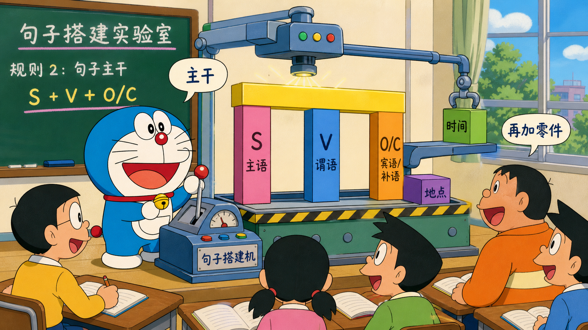
第六部分 练习与参考答案
1. The keys are ___ the table.
2. I bought this book ___ my sister.
3. Please send the file ___ me before noon.
4. The picture fell ___ the wall.
5. We walked ___ the tunnel and came out on the other side.
第六部分 练习与参考答案
6. She has lived here ___ 2022.
7. Please finish the report ___ Friday.
8. I waited ___ six o’clock.
9. The child is afraid ___ dogs.
10. The door was opened ___ Anna ___ a key.
11. We drove ___ the river, following the road beside it.
第六部分 练习与参考答案
12. He ran ___ from home.
13. The plane flew ___ the clouds.
14. The temperature fell ___ zero.
15. Everyone came ___ Tom.
第六部分 练习与参考答案
1. 为什么说 I bought a gift for Emma，但 I gave the gift to Emma？
2. 为什么说 on time 与 in time 意思不同？
3. 为什么说 written by George Orwell，但 written with a pen？
4. 为什么说 get off the bus，却常说 get out of the car？
5. 为什么 at school、in school、in the school 可能表达不同视角？
第六部分 练习与参考答案
6. 为什么 walk through the park 与 walk across the park 画面不同？
第六部分 练习与参考答案
1. 因为昨天开会开得太晚，所以我没有完成报告。先写核心事件，再加原因和时间。
2. 关于人工智能在医疗中的应用，我觉得最大的挑战是数据质量。选择一个清晰主语。
3. 这次旅行虽然很累，但是风景非常漂亮，所以我还想再去。使用 Fact → Opinion → Reason → Contrast → Conclusion。
4. 我们可以周六去，也可以周日去，不过天气可能不好。用计划型对话框架组织。
第六部分 练习与参考答案
| 练习一答案 1 on；2 for；3 to；4 off；5 through；6 since；7 by；8 until；9 of；10 by / with；11 along；12 away；13 above；14 below；15 except。 |
| 练习二参考思路 1. for 标记受益目标，to 标记转移终点。 2. on time 与计划点对齐；in time 表示尚未越过“太晚”的边界。 3. by 引出施事者，with 引出工具。 4. off 聚焦从公共交通平台/服务脱离；out of 聚焦从小型容器内部出来。 5. at 是地点/活动点；in school 是教育状态；in the school 是建筑内部。 6. through 强调在内部路径中穿行；across 强调从一侧到另一侧。 |
| 练习三示例 1. I didn’t finish the report because the meeting ended too late yesterday. 2. Data quality is, in my view, the biggest challenge in applying AI to healthcare. 3. The trip was exhausting, but the scenery was beautiful. I really enjoyed it, and I’d like to go again. 4. We could go on Saturday or Sunday. The only problem is the weather. If the forecast is bad, we can choose an indoor activity instead. |
ENGLISH OS 3.0 · TEACHING COURSEWARE
这一部分保留原文全部知识点，并按“画面 → 关系 → 表达 → 练习”重新编排。
附录 A 一页速查表
| 词 | 核心画面 |
|---|---|
| of | 关系锚点：部分、属性、内容、集合、对象 |
| from | 起点、来源、分离点 |
| for | 目标、用途、受益者、交换、时长 |
| to | 终点、接收者、连接、变化终点 |
| toward(s) | 朝向，不保证到达 |
| off | 从接触/连接/工作状态脱离 |
| away | 与参考点拉开距离、不在场 |
| with | 伴随、工具、特征、内容、方式 |
| by | 临近、手段、施事者、截止、单位 |
| at | 点式定位、时刻、活动点、目标点 |
| on | 表面、依附、媒介、运行状态 |
| in | 容器、范围、时间段、状态 |
| into / onto | 进入内部 / 到达表面 |
| through / across / along | 穿过内部 / 横跨 / 沿线 |
| over / above | 覆盖/越过 / 单纯更高 |
| under / below | 遮盖/控制之下 / 低于刻度 |
| between / among | 逐一对象之间 / 群体之中 |
| within / beyond | 边界以内 / 超出边界 |
| by / until | 最迟完成 / 持续到终点 |
| for / since / during | 时长 / 起点 / 事件期间 |
ENGLISH OS 3.0 · TEACHING COURSEWARE
这一部分保留原文全部知识点，并按“画面 → 关系 → 表达 → 练习”重新编排。
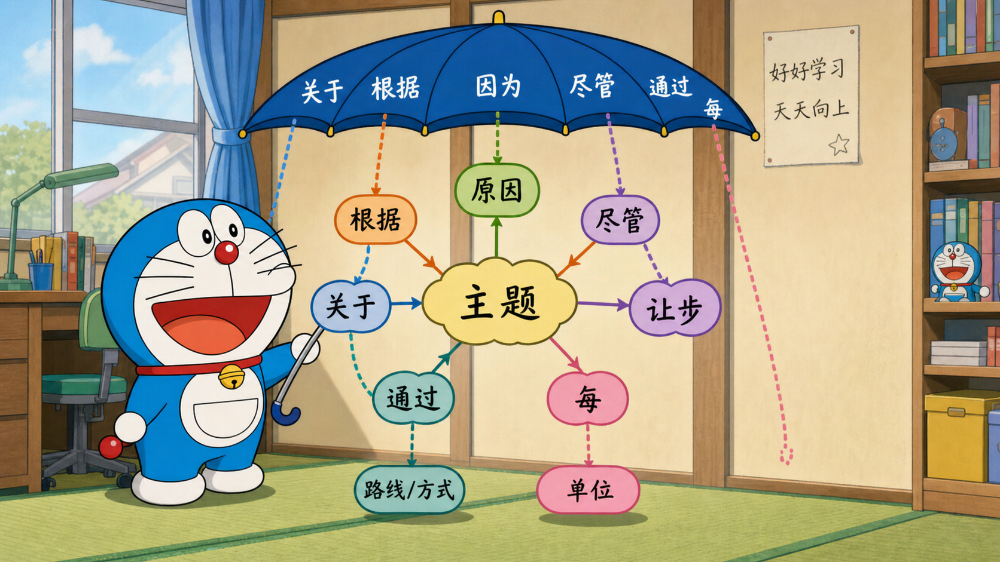
附录 B 每日 15 分钟训练模板
1. 选 5 个例句，只看英文，不看中文。
2. 圈出介词前后两个实体，画箭头或边界。
3. 用一句中文解释关系，但禁止只说“这里固定搭配”。
4. 替换名词，造 2 个同结构新句。
5. 朗读并做 shadowing，注意介词常弱读，但语义关系不能丢。
6. 把判断错误的搭配加入个人 Error Bank。
ENGLISH OS 3.0 · TEACHING COURSEWARE
这一部分保留原文全部知识点，并按“画面 → 关系 → 表达 → 练习”重新编排。
附录 C 最终总原则
| ◆ English OS 的核心 先看事件，不逐词翻译。 先搭主干，再加信息。 先确定逻辑，再选连接。 介词先看空间关系，再理解抽象延伸。 核心画面帮助理解；高频 Chunk 帮助自然输出。 真正的高级英语，是让听者更快、更准确地理解你。 |
CLOSEOUT